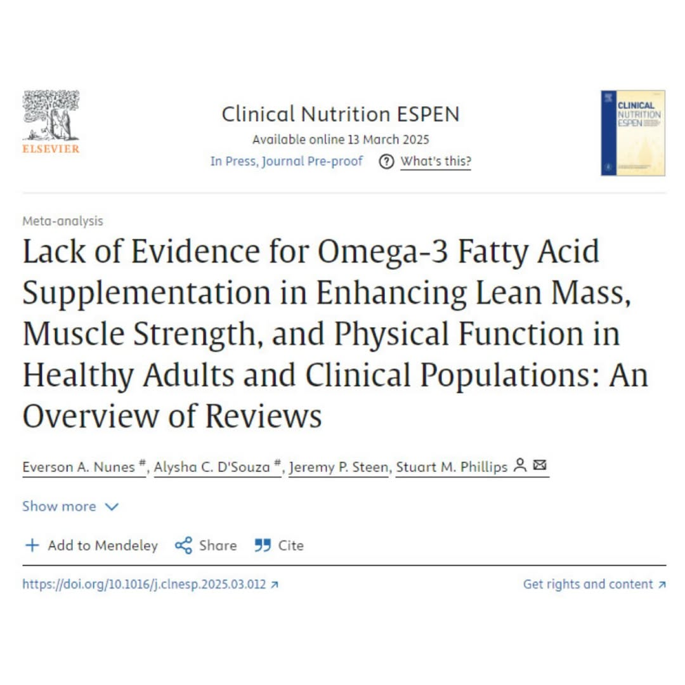

There is some evidence that omega 3 fats might protect against muscle loss.
Some of the possible mechanisms are outlined here.
Louis shares a diagram on how EPA and DHA influence insulin sensitivity, energy use, fat storage and muscle protein synthesis.
There is some evidence that omega 3 fats might protect against muscle loss.
Some of the possible mechanisms are outlined here.
Most people take omega-3s for heart health… but they also change your muscle tissue.
Not just inflammation.
Not just triglycerides.
Actual muscle biology.This diagram breaks down what happens to omega-3 fats (EPA + DHA) once they enter your system, and why they influence insulin sensitivity, energy use, fat storage, and even protein synthesis.
- It starts in the gut.
Omega-3s come in through the diet → absorbed in the small intestine → packaged into chylomicrons and VLDLs.
- They move through the bloodstream.
From here, EPA and DHA end up in HDL particles, plasma, and eventually… the muscle membranes themselves.
- Once omega-3s enter muscle, everything changes.
They modify the fatty acids sitting in the surface of muscle cells, leading to:
- Better insulin sensitivity
- Better glycogen use
- Less fat stored inside muscle
- Higher metabolic flexibility
This is one of the reasons omega-3 intake improves glucose control, even without changing calories.
- Omega-3s activate a whole network of enzymes (phospholipases).
These enzymes shift the “internal messaging” inside muscle cells:
Lipase D → boosts long-chain omega-3 phospholipids
Lipase C → influences IP3/DAG signaling tied to protein synthesis
Lipase A2 → drives eicosanoid pathways tied to new sarcomere formation
In simple terms:
Omega-3s don’t just sit in the membrane — they signal the muscle to build, repair, and use energy differently.
- The end result?
Muscle that’s richer in long-chain omega-3s shows:
- Better insulin response
- Less intramuscular fat
- Less energy wasted on fat synthesis
- Potential improvements in protein synthesis
- Better metabolic function overall
This is why omega-3s keep showing up in studies on athletic recovery, lean mass retention, aging, and metabolic health.
Your muscles aren’t just passive tissue — they’re listening to everything you eat.
And omega-3s speak their language.
doi:10.1051/ocl/2024011
Reposts a list of the supplements Rhonda Patrick takes, including multivitamin, fish oil, vitamin D, K2, ubiquinol, cocoa extract, sulforaphane, berberine and urolithin A, plus evening magnesium and more fish oil. It is a personal regimen with no supporting studies attached, so it is context rather than evidence.

Louis notes that omega-3 protection against muscle loss has been accumulating for years. The shared summary describes a 2025 placebo-controlled trial in adults with overweight or obesity doing alternate-day fasting, where krill oil preserved fat-free mass and function despite equal weight loss.

Louis shares Stuart Phillips' summary of a 2025 Clinical Nutrition ESPEN review of 33 systematic studies, which found little evidence that omega-3 supplements improve lean mass, muscle strength or physical function in healthy adults or clinical groups. Some small benefits in older adults were suggested, but exercise and protein remain the best strategies.
Gokhan shares his fish oil plan, combining mixed EPA-DHA capsules with pure EPA for 3 g EPA, 1 g DHA and 4.9 g total omega-3 daily. He notes EPA is the main vascular contributor but DHA may also help, and asks for others' thoughts.

Clinical review of foods and supplements affecting small dense LDL, an independent risk factor. Pistachios, hazelnuts and mixed nuts in a Mediterranean diet consistently improve sdLDL and particle size, and high-polyphenol olive oil (25 mL/day for 3 weeks) cut small LDL particles 15.3%.

Louis shares a 21-year Danish study of 54,546 adults using fat-tissue samples of EPA and DHA. People with the highest EPA had a 36% lower risk of bleeding stroke, DHA was neutral, and ALA was linked to 32% higher risk (needs confirmation). Pooled RCTs found no extra brain bleeding, except small risk with high-dose prescription EPA. The study is observational.